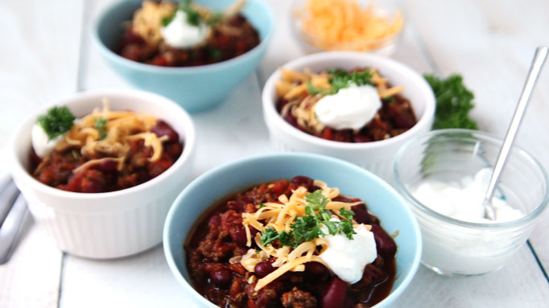

Barack Obama's Chili

Description
President Obama's Chili Recipe - A simple yet hearty meal made to be a comfort food meal the whole family will love.
Ingredients
- 1 Tbsp olive oil
- 1 large onion, chopped
- 1 green bell pepper, chopped
- 5 cloves of garlic, chopped
- 1 lb ground turkey or beef
- 1/2 tsp ground cumin
- 1/2 tsp ground oregano
- 1/2 tsp ground turmeric
- 1/2 tsp ground basil
- 1 Tbsp chili powder
- 3 Tbsp red-wine vinegar
- One 28-ounce can peeled tomatoes (I prefer San Marzano)
- One 29-ounce can dark red kidney beans, drained and rinsed
Steps
- Heat the olive oil in a large sauté pan on medium-high heat
- Add the onions, green pepper, and cook until soft, about 5 minutes
- Add the meat to the pan. Once the meat has browned, add the spices
- Stir in the red-wine vinegar and tomatoes
- Using a potato masher, mash the whole tomatoes down
- Stir in the kidney beans.
- Cook the chili covered for 15 minutes on medium-low heat.
Return to homepage.